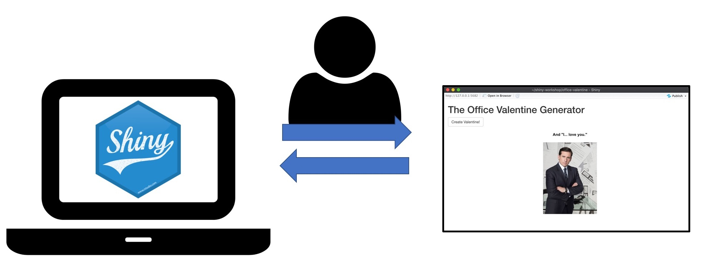
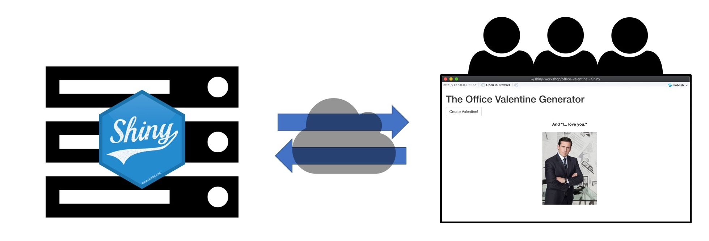
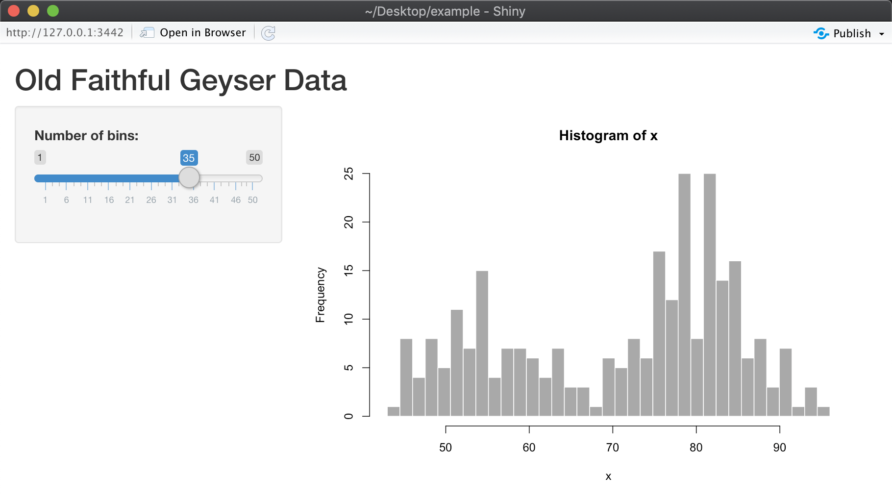
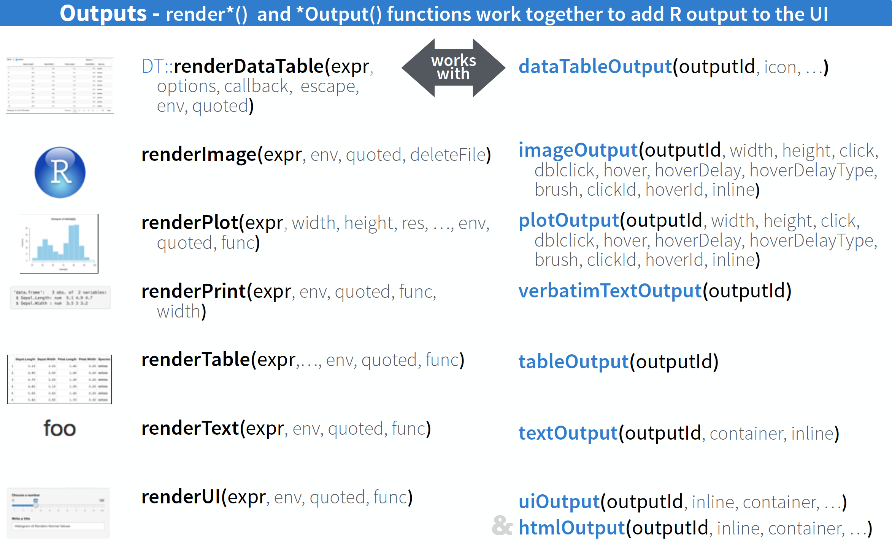

Additional Help
| Office Hours | Location |
|---|---|
| Tuesday 3-5pm | PLSB 430 |
| Wednesday 3-5pm | Brown Library “Worst Cat” Table |
| Thursday 10am-12pm | Health Sciences Library Mill Room |
Computer Setup
What You’ll Need
- Development server (just your computer!)
- Deployment server (shinyapps.io, DCOS)
Development Server
This is where you will write and test the code for your Shiny app. You can interact with your app, but no one else can.

You will spend most of your time on your development server.
Deployment Server
Once you’re ready to share your app, it’s time to move it to a deployment server (deploy your app).

Your development server is no longer serving your app.
Set up your development server
Option 1: Clone the GitHub Repository
- Open the terminal.
git clone https://github.com/uvarc/shiny-workshop
Option 2: Create a New R Project
- File > New Project > Version Control > Git
- Repository URL: https://github.com/uvarc/shiny-workshop
- Create Project
Run packages-for-workshop.R
Set up your deployment server
Create a free account on shinyapps.io.
Can host 5 apps on shinyapps.io for free.
You can also host your apps on UVA servers (beta): https://www.rc.virginia.edu/userinfo/microservices/
Workshop Files
File Organization
Project Directory
slides/: contains all the RMarkdown files/slides for this workshop- Knit
MAIN.Rmdto see the main slideshow - Each section is a separate RMarkdown file
- Knit
projects/: contains all the code we’ll be working with today- Each app will live in a separate directory
sandbox/: place to put code snippets or quick demos
Creating a new Shiny project
How do you create a new blank Shiny app? Create a new Shiny project in sandbox.
Poke around RStudio and try on your own, or peer over a neighbor’s shoulder.
Old Faithful
Using New Project -> Shiny Web App creates a living, breathing Shiny App

A better way to do it
- Open a new R Script file.
- Start typing
shinyappand press Tab to autocomplete.
- This will expand into a “snippet” of code–the skeleton of a Shiny App.
- Save the file in
Sandboxand run the app.
It’s still a working Shiny app–it’s just doesn’t do anything. Starting from the snippet is less error-prone than creating a new project and deleting the guts.
Stop an app by clicking the STOP button in the console.
What is a Shiny app?
Shiny apps are just webpages
Webpages are made up of 2 main components
- HTML/CSS: what your app looks like (the form)
- JavaScript: what your app does (the function)
The difference between Shiny apps and regular webpages: Shiny apps are powered by an R session
Creating a Shiny app
- Regular R stuff: writing code to manipulate and analyze data, visualize with graphs, etc…
Create a user interface
Connect 1 to 2 with reactive logic
Shiny Bridges Two Worlds of R Programming
| 1. Muggle World | 2. Wizarding World |
|---|---|
| - Regular R code | - Reactives |
| - Functions, packages, etc | - Functions w/o arguments |
- Values that can’t be changed with <- |
|
- Packaged in a server function |
The Wizarding world can reach out to the Muggle world, but not the other way around.
Project 0: Our First App
The main file, app.R
This file contains all the components of the app: the user interface and reactive logic.
The UI and reactive logic can be in separate files that are sourced in app.R or all put in the same file.
shinyApp()
app.R is just a regular R script
- Adding the call to
shinyApp()at the end of the script changes the “Run” button to “Run App”
Starting in the Muggle World
Let’s start with muggle.R (our run-of-the-mill R code)
We load the libraries we need
We create a function
muggle_plotthat takes variable names from thediamondsdataset as inputs and generates a scatterplotTest it out if you want
User Interface
The function tagList takes HTML functions as inputs and creates a list of HTML components
Try running the first line,
h2("A very basic Shiny app")in the consoleFunctions like
h2,p, andactionButtonare wrappers for HTML code (essentially strings)The first argument in
actionButton,plotOutput, andtextOutputare IDs. We will use these IDs in the next part
Reactive Logic
We will connect the UI to the Muggle code with reactive logic
We are assigning a function to
reactive_logicwith three arguments:input,output, andsession. The arguments are always the same, butreactive_logicis usually calledserver.Functions
renderPlotandrenderTextare assigned tooutput$IDname. They correspond to the UI functionsplotOutputandtextOutputTry running
renderText("Hello World!")
Invoking the App
shinyApp(user_interface, reactive_logic)
Your Turn: Modify the App
Hide the button message until the button has been clicked 3 times.
Add
selectInputdropdown menus for the X and Y variables.(Superstar) Connect the
selectInputmenus to the plot (we haven’t covered this yet)
Deploying the App
Put all the files your app needs in a single directory (the name of the directory will be the name of the app)
Make sure there is a file called
app.Rwith the call toshinyApp()rsconnect::deployApp("/path/to/app/directory")
Project 1: User Interface
Building a User Interface
- Instantiating input and output widgets
- Frameworks and layouts
- Organizing widgets within the framework
Widgets
Open
project1-uiand take a look atUI_starting.RandKnight_bus.R.Run
app.R.We only see inputs because nothing is connected to the outputs.
The Shiny Widget Gallery
Input Widgets
Output Widgets

Playing with Widgets
Add some input widgets to UI_starting.R
actionLink
checkboxInput
radioButtons
textInput
Make sure the app still works with your changes!
Connecting Inputs to Outputs
Add some reactive logic to Knight_bus.R so that the text output felix (output$felix) displays the selected choice from annie (input$annie)
Frameworks and Layouts
Replace
UI_starting.RwithUI_fluid_page.RRun the app
Pretty ugly, right? Now try replacing
tagListwithfluidPage
fluidPage()
A fluid page layout consists of rows which in turn contain columns
Rows ensure that items appear on the same line as long as the browser is wide enough (hence the fluid)
Columns define how much horizontal space elements should occupy. Horizontal space is defined by a 12-unit wide grid
Adds some Bootstrap styling (framework for designing websites–developed by Twitter)
fluidRow() and column()
Changing tagList to fluidPage didn’t do much
Let’s add some fluidRows() and column() functions to create this:

fluidPage() is responsive
Try adjusting the size of your browser window
Other Layouts
tabsetPanel()+tabPanel()sidebarLayout()+sidebarPanel()/mainPanel()splitLayout()wellPanel()navbarPage()navlistPanel()
Project 2: Reactives
Reactivity
We’ve already seen some examples with our render functions, but what exactly is reactivity?
Reactivity is a 2-step process
Reactive values notify functions that use them when they become invalid
Objects created by reactive functions respond
Reactivity Diagram

Project 2: Pythagorean Theorem
Run
pythagorean-1.Rand change the input values a few times.Stop the app
Run
reactlogShow()(may need to install first)
Adding an expression: modularizing reactions
Run
pythagorean-2.Rand change the input values.Stop the app
Run
reactlogShow()Reactives are lazy and only update when they need to
Reactives vs. observers
Reactives: calculate or cache a value, meant to be used as a variable, has a result
Observers: runs some code when a dependency changes, doesn’t yield a result, isn’t used as input for other expressions, not assigned to a variable
Project 3: Plotting a Data Frame
Objectives
With this app, a user will be able to select a data frame from a list of choices, and then select a response and explanatory variable. The app will have 3 types of functionality:
Plot a scatterplot of the data frame (response vs explanatory)
Show the head of the data frame
Print out a regression report
Step 1: re-organize the code
Start with app-0.R. It’s a working app-see for yourself!
Even though the app has very little functionality, the script is already crowded.
Pull out the UI and put it into a file
ui.R. Do the same forserver.Source these into
app-0.R.Make sure the app still works!
Step 2: Tabify the app
Having all the outputs on one page can be messy.
Put each output widget on its own tab with an informative label
Put the input widgets in the same tab as the table display (head of data frame)
Make sure the input widget/table display tab is displayed when you start the app
Step 3: Fill in choices for response and explanatory
Write some reactive logic so that the appropriate choices appear for the response and explanatory input widgets
Hint: use updateSelectInput(). The variable names will be returned by names(Raw_data()). Should you use a eventReactive() or observeEvent() to accomplish this?
Step 4: Display the data
Write reactive logic to:
Display the head of the selected data frame in a table (only the response and explanatory variables)
Plot response versus explanatory in a scatterplot
You’ll be using the render functions to create the displays. Is there a way you can create a common object for that can be used by both of the render functions? Hint: use reactive()
Step 5: Show a summary of the model
Display a summary of the linear model response ~ explanatory.
Hints: - You can use paste() to construct the formula
- Try
renderPrint